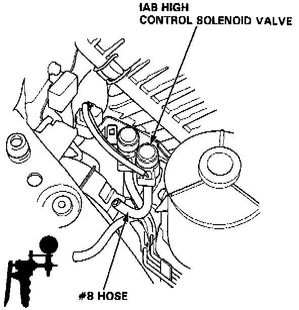

Intake Air Bypass (IAB) High Control Valve

1. Disconnect the #8 hose from the vacuum hose manifold and attach a vacuum pump to the vacuum hose manifold.
2. Apply vacuum and verify that the IAB control diaphragm valve holds vacuum and that as the vacuum is applied and released the IAB control diaphragm valve rod moves in and out.
- If the IAB control diaphragm valve does not hold vacuum or the IAB control diaphragm valve rod does not move in and out, replace the IAB control valve and retest.